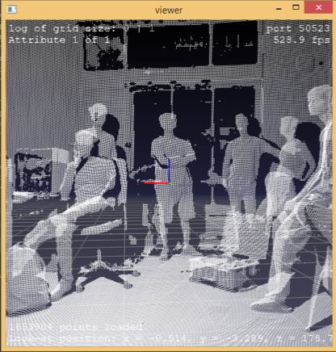
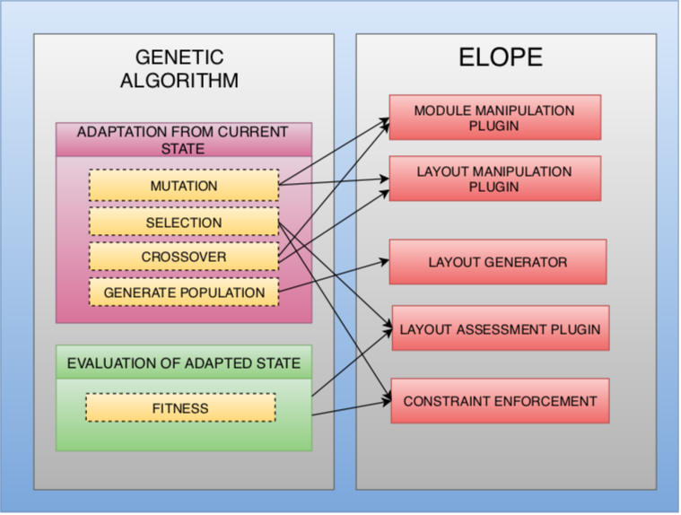
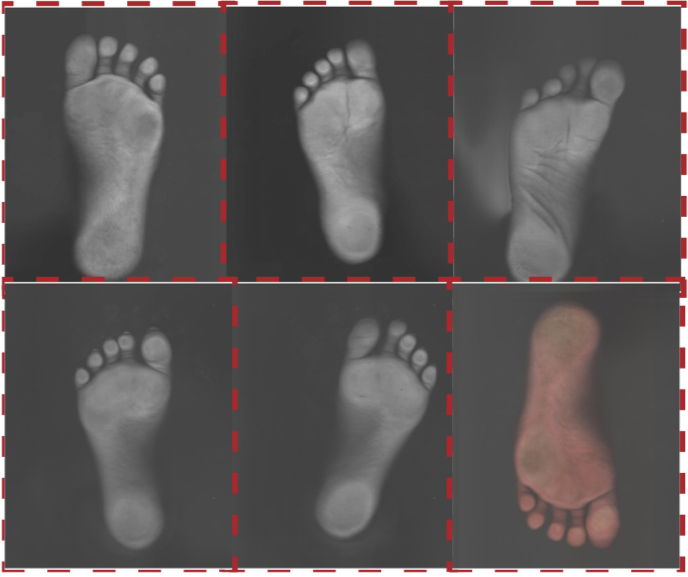
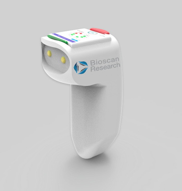
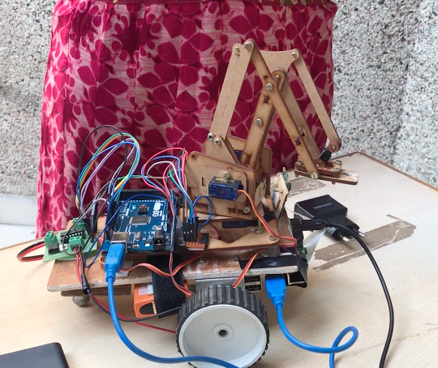
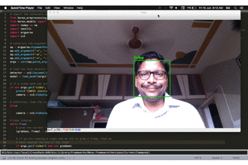
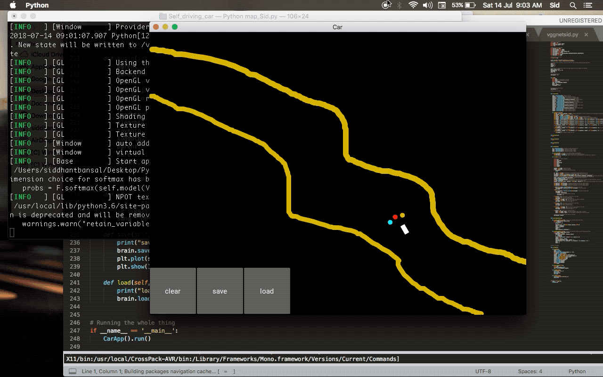

|
Siddhant Bansal
I am a Research Intern at Computer Vision Lab, IIT Gandhinagar. I am working with Prof. Shanmuganathan Raman on the project titled "Cultural Heritage Preservation and Restoration using Digital 3D models" funded by the IMPRINT. I am broadly interested in 3D Computer Vision, Deep Learning and related problems.
My ultimate goal is to contribute to the development of machines capable of reading an instruction manual and creating new machines!
Email /
CV /
Github /
LinkedIn /
Twitter
|
|
|  |
Research Intern
IIT Gandhinagar
March 2019 - August 2019 (Gandhinagar, Gujarat)
Worked on the project titled "Cultural Heritage Preservation and Restoration using Digital 3D Models", with Professor Shanmuganathan Raman. The project was supported by NVIDIA and IMPRINT (Impacting Research Innovation and Technology) an initiative of the Government of India.
Major work done:
- Data Collection in the form of Point Clouds using Faro Focus 3D Laser Scanner.
- 3D Computer Vision using PointNet and PointNet++.
- Point Cloud Alignment using algorithms like ICP (Using Eigenvalues Eigenvectors, SVD, and studied various deep learning approaches like Deep Closest Point, DeepICP, Discriminative Optimization, Auto-Encoder Approach, PointNetLK).
- Developed an algorithm for Point Cloud Completion using Fully-Connected Auto-Encoder and got some decent results on ShapeNet dataset.
|
|  |
Artificial Intelligence Intern
Meditab Software, Inc.
September 2018 - March 2019 (Ahmedabad, Gujarat)
Worked on the project titled "Facility Layout Optimization using Genetic Algorithm".
Major work done:
- Created a python environment named ELOPE (Evolutionary Layout Optimization and Evaluator) from scratch, for testing and visualizing all the evolutionary optimization algorithms.
- Created an automatic system for analyzing log files for anomaly detection in the DosePacker system.
|
|  |
Artificial Intelligence Research Intern
Bennett University
June 2018 - July 2018 (Greater Noida, Uttar Pradesh)
Worked on the project titled "Credibility Examination of Human Footprint Using Minutiae Features". The project was supported by NVIDIA by providing DGX 1 Tesla V100.
YouTube
Major work done:
- Collected dataset of footprints from 180 volunteers, using just a simple paper scanner at 600dpi.
- Developed a custom Convolution Neural Network for classifying humans based on the shape and size of their footprints. The network was trained on the data collected earlier.
- Research on Siamese Networks and one-shot learning techniques for person identification using footprints.
|
|  |
Data Analyst Intern
Bioscan Research
April 2018 - July 2018 (Ahmedabad, Gujarat)
Worked on applying Artificial Intelligence and Machine Learning to an onsite detection tool for instantaneous scanning of intracranial bleeding.
Major work done:
- Developed a GUI for keeping track of patients and the data coming from the device.
- Developed an automatic detector (using Python) for detecting actual signal (coming from a near-infrared laser scanner) amidst the noise from the brain scan
|
|  |
Automatic Garbage Detection and Collection
Funded by the Government of India under the SSIP(Student Startup and Innovation Policy) scheme.
In this project, we are using Python for Image Processing and Artificial Intelligence to detect the
garbage, once detected then the robot automatically picks up the garbage and leave the valuables untouched.
The AI algorithms are running on the Raspberry Pi model B+ and all the motors and arm is
controlled using Arduino Mega.
|
|  |
Smile Detector
GitHub
This project was made for detecting smile in a live video using the webcam or a pre-recorded video.
|
|  |
Self Driving Car
GitHub
YouTube
This project was made while learning about Deep Q Learning which is a widely used technique for Reinforcement Learning.
|
|